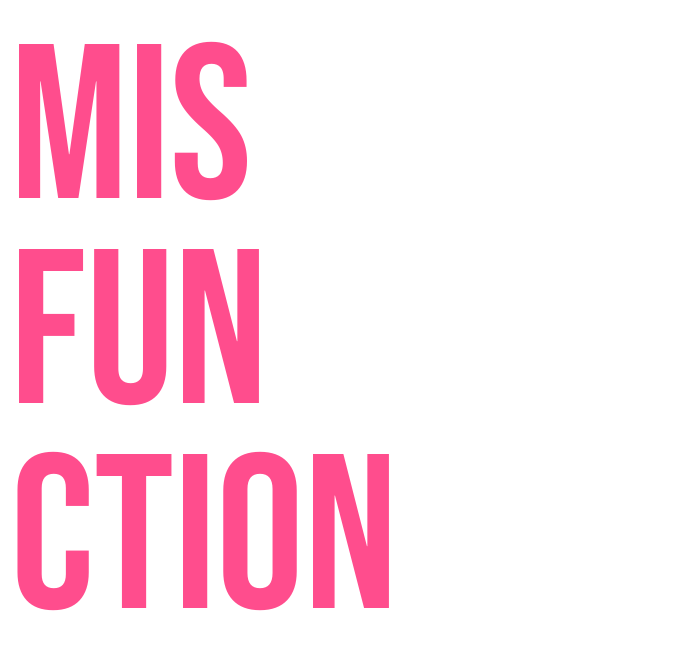

Factsheet
- Developer
- Thomas Winski (solo) - Dunfermline, Scotland
- Status
- Feature-complete core, final art pass in progress
- Release date
- Targeting Q1-Q2 2027 (estimate - sequence is firm)
- Platforms
- Android first (portrait). iOS + PC/Steam planned
- Model
- Premium - no ads, no IAP, no subscriptions
- Genre
- Puzzle roguelike / cognitive-interference card sorter
- Engine
- Godot 4.5
- Website
- wins-ki.itch.io/misfunction
- Playable now
- Prototype builds + devlogs on itch.io; press APK on request
Description
Misfunction is a card-sorting roguelike built on the Stroop effect - the psychology experiment where a colour word printed in the wrong ink breaks your brain for a second. Swipe each card in the right direction before the timer drains. Simple, until the rule changes: follow the ink, follow the word, swipe the opposite, find the one word hiding in a grid of liars.
The mechanic is pre-installed - everyone has seen the Stroop test, as a meme if not a lab. Sort the card. Ignore the word. Trust the ink. Now do it 60 times while the rules keep changing and the timer keeps shrinking.
History
Built by the person who'd normally be finding its bugs
Thomas Winski spent seven-plus years in QA leadership at Build A Rocket Boy (AAA title), finishing as QA Manager over ~60 internal staff and ~70 external testers. Before games he was a professional UX researcher and ergonomics research scientist, MSc Engineering Psychology. Misfunction is a solo build - design, AI-assisted code, art direction - backed by an automated test harness that plays full runs headless through every mode, boss and menu. The test harness isn't an accident.
A game about lying labels
Every boss wears a mortal name at Tier 1. At Tier 2 the name is spelled backwards - the same moment your controls invert. Beat Tier 3 and the boss unmasks a true name: VERRE becomes ERREV becomes something older. The whole game is misidentified things; the bosses are the joke taken seriously.
Public development
Development has been public from the bare-metal prototype onward - build history and devlogs live at the itch page.
Features
- 9 rules, every one a real cognitive-interference experiment: Stroop, Eriksen Flanker, negative priming, Simon effect, visual search
- 4 modes - Rogue Sort (the 60-round campaign), Endless Sort, Daily Sort, Boss Rush - plus timed Bonus Rounds that fund the modifier shop
- Daily Sort: one attempt a day, same cards for everyone on Earth, per-day global leaderboard, branded share image (PNG + animated GIF) - every share is a free ad with a challenge attached
- ~60 draftable modifiers and 7 unlockable traits - chaos picks, stabilisers, or pay to skip
- 5 named bosses x 3 tiers: rule twists, inverted controls, and experimental variants - orbital letter rings, teleporting word grids, a 10x10 wordsearch
- Customisable hit VFX - 7 unlockable strike styles won from bosses (Eris' Chorus, Athena's Verdict, Arachne's Thread, Apep's Coil)
- Every correct swipe answers with a lightning strike; misses lash back in dark arcs; rounds replay as slow-motion cinematics
- Global leaderboards on every mode + offline score queue + delete-scores privacy controls
- Multi-profile saves, mid-run checkpoints, unlock notifications, collection browser
- Built like a shipped product: 30+ automated verification suites with per-screen capture
Videos
Screenshots
download all screenshots & logos as .zip
Pre-final-art-pass captures. Final assets in progress - re-shoots on request.


Logo & Icon
Included in the .zip - or right-click any version below.


About the Developer
Thomas Winski is a solo developer based in Dunfermline, Scotland. A former AAA QA leader and human-factors researcher, he built Misfunction alone in Godot - design, AI-assisted code, and art direction - applying a researcher's eye to a game about how brains fail under pressure.
Misfunction was developed solo with AI-assisted programming in Godot 4.5. Design, rules, art direction and all testing are the developer's own work.
Contact
Thomas Winski - misfunctiongame@gmail.com
Web - wins-ki.itch.io/misfunction
Playable build - press APK on request, prototype builds on itch.io
Pitch deck, fact sheet and full screenshot set available on request.
Launch List
Launch announcements, a devlog when something big ships, nothing else. Maybe 4-6 emails a year. No spam, unsubscribe any time.
Powered by Buttondown. Or email Thomas and he'll add you manually.